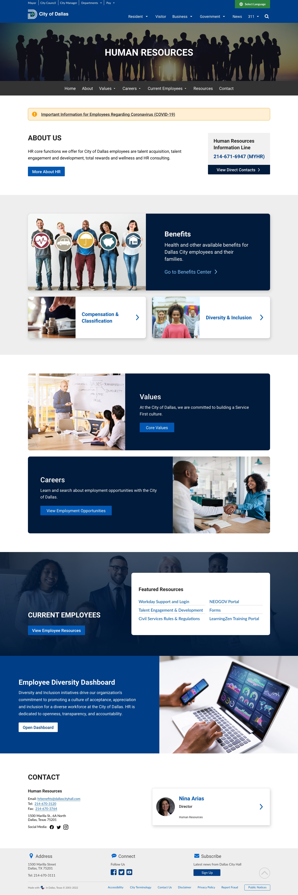

City of Dallas Human Resources
Design Audit
Continuous internal quality assurance activities to review departmental web pages and evaluate them from a user experience perspective to ensure it meets accessibility, user interface component continuity, and design unity requirements set forth in our live style guide.
Role: UX/UI Designer
Programs: Adobe XD & Powerpoint
Year: 2022
Project Outcome: Create proposed UI/UX changes to the current Human Resources department website. Upcoming plans to work with the department to present our findings and solutions.
Audit Presentation


Proposed UI Design Concept
Back